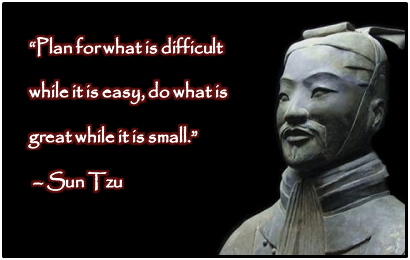

evry battle is won before it is fought
-sun tzu, the art of war
Button Styles
war
strategy
tactics
battle
siege
victory
success
appear weak when you are strong and strong when you are weak
quotes from the art of war 
never inturupt your enemy when he is making a mistake
sun tzu